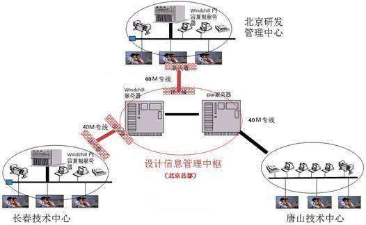

技术创新体系建设
建设适应发展需要的一体化技术创新体系，形成一流的技术创新资源有效整合与高效运用能力
持续的技术创新实践中我们深切地体会到，企业技术创新的主要矛盾是创新活动所需资源和所拥有资源的矛盾。解决这一矛 盾的根本方法是努力建设和完善适应公司发展需求的，开放、协同、高效的，一体化的技术创新体系，实现外部技术创新资源最大化为我所用，内部技术创新资源最 高效发挥作用，以有限的资源支撑公司技术创新活动，提升技术创新能力。
以提高创新资源效率为目标推进整体管控方式与组织模式的转变。由于历史原因，和许多国有企业一样都是先有下属企业、 后有中国北车，股份公司对整体资源的优化配置程度相对不足，技术创新资源严重不足与重复配置浪费较大的现象同时存在。我们通过项目管理等方法实施战略性重 点产品创新，统筹规划，加强股份公司战略管控职能，实现了整合相关设计开发、工程化、产品制造等资源，推进了整体管控方式和组织模式的转变。在高速动车组 的项目实施中，我们整合长客股份公司与唐山客车公司相关技术与管理资源，推行了新一代高速动车组两厂三地联合设计模式，在北京开展概念设计和系统设计，在 唐山、长春两地分别开展工程设计，实现重大战略性产品技术开发股份公司整体策划、企业协同攻关，有效保证了项目的顺利实施。
以充分利用外部创新资源为目标推进企业竞争方式的转变。实施“抢点占位”战略，中国北车及所属企业共4家企业进入国 家创新型（试点）企业行列，15家企业进入高新技术企业行列。积极承担国家和地方科技项目，近年来承担国家级科研项目近30项，主持了国家“十一五”科技 支撑计划中铁路移动装备研究的全部项目。在抢占技术和项目布局优势的同时，近三年争取到近5亿元的项目研究经费支持。
以系统化使用创新资源为目标推进了技术创新体系建设。构建了以国家工程实验室、国家重点实验室等国家级研发机构为重 点的面向共性、核心、基础性、前瞻性技术研究，以覆盖公司主要产品的国家级企业技术中心为龙头的面向市场产品研发和产品实现的产品技术研发体系。产学研战 略联盟、博士后工作站等在股份公司核心技术突破、战略性产品开发等方面形成了重要补充，发挥了重要作用。形成了以技术创新资源、产品技术、项目成果、知识 产权、标准化、专家人才培育等为骨干的技术创新机制和制度体系。技术创新资源保证机制进一步完善，中国北车第二次党代会提出的技术创新投入从绝对数量到相 对比例逐年上升，到2011年将达到5%的目标已经实现。